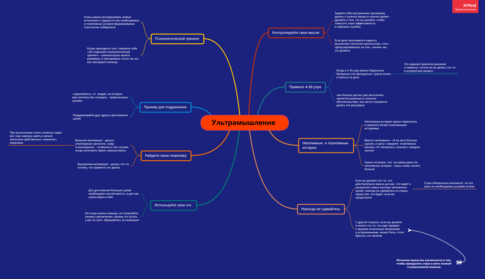

Трэвис Мейси — профессиональный ультрамарафонец, спикер, коуч. Он финишировал в более чем 120 сложнейших гонках на выносливость в 17 странах мира и установил рекорд сложнейшего многодневного соревнования Leadman, состоящего из следующих друг за другом длинных беговых и велосипедных гонок в Скалистых горах.
Информация о книге
- 8 спортивных постулатов, которые пригодятся в обычной жизни и работе
- Советы от знаменитого спортсмена
- Для всех, кто хотел бы попробовать себя в сверхмарафонском беге.
- Для тех, кому интересны методы и приемы, которыми пользуются люди, выдерживающие тяжелейшие нагрузки на ультрамарафонах.
История Трэвиса
До того как сосредоточиться на беге, Трэвис был одним из лучших в мире спортсменов в приключенческих гонках — круглый год он участвовал в многодневных соревнованиях в самых разных точках планеты: в Китае, Аргентине, Франции, Новой Зеландии и Бразилии.
Mindmap
